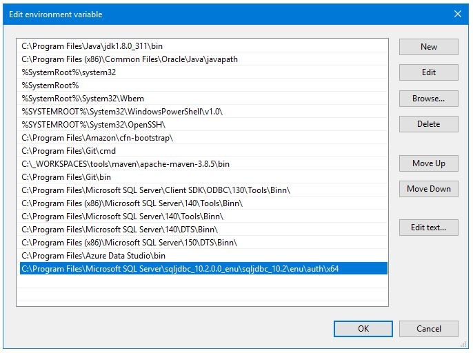

Install Microsoft Sql Server
Follow the instructions at the link below to install a Microsoft Sql Server. Select the SQL Server on-premises option.https://www.microsoft.com/en-us/evalcenter/download-sql-server-2019

When the install is done, select install SSMS to install the Sql Server Management Studio (SSMS). This is an application that can be used to directly interact with instances of Sql Server. If you forget to do this install, you can follow the optional instructions below to install it directly.

Install Microsoft Sql Server Management Studio (SSMS)
Follow the instructions at the link below to install a Microsoft Sql Server Management Studio.https://docs.microsoft.com/en-us/sql/ssms/download-sql-server-management-studio-ssms?view=sql-server-ver15

Enable TCP/IP
Some (all/most?) installations of MS Sql Server do not enable TCP/IP connectivity by default. This needs to be configured manually. Do the following to activate TCP/IP connectivity for MS Sql Server.
Start Sql Server Configuration Manager
Enable TCP/IP
TCP/IP connectivity can be enabled in the SQl Server Configuration Manager as shown below.

Check TCP/IP Port
While we're here, we can check what port MS Sql Server is listening on (default is 1433). Right click on "TCP/IP Enabled" and select "Properties" to display the TCP/IP Properties window shown below.
Enable Mixed Mode Authentication
By default, some installations of MS Sql Server have mixed mode authentication disabled. To authenticate using a username/password (i.e. not using Windows authentication), mixed mode authentication needs to be enabled. Enable mixed mode as shown below
Open Sql Server Management Studio (SSMS), select the server, then select Properties.
Select Security, then select the radio button for "SQL Server and Windows Authentication mode"
Restart Sql Server: Open the Windows Services utility and restart the Sql Server service.
Download the MS Sql Server JDBC Driver
The MS Sql Server JDBC Driver jar file can be downloaded from Microsoft here.
Install DLLs for Microsoft Sql Server JDBC Connectivity
For some reason Microsoft requires the installation of custom DLLs for JDBC to work.
Note that the versions of the DLL and the JDBC jar need to match.
There are specific versions for JRE versions (JRE 11, JRE 8, etc.).
The drivers for these versions are marked as 11.2.2.jre11, 11.2.2.jre8, etc.
You may need to modify the pom.xml file of your application to use the correct version of the driver for your database version.
The DLLs can be found in the zip file we downloaded for the JDBC Driver as shown below after the zip has been unzipped (enu/auth/64 for the 64 bit version).
Move the dll to a permanent location and then add the location of the dll to your path as shown below.
Alternatively you can move the dll to a location already on the path.
